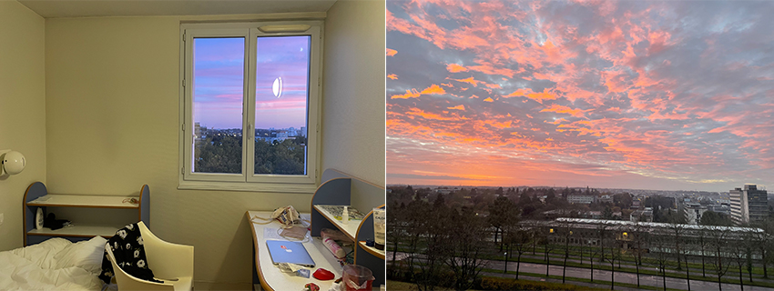
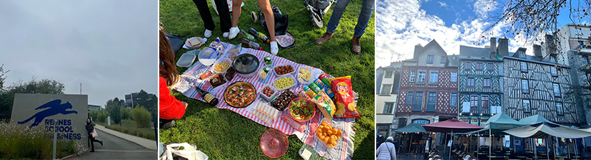
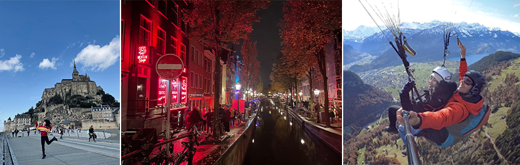

一年一度新北市工務局都會所舉辦親子路平園遊會，主要是讓民眾參觀大型施工機具與了解路平知識，活動中小朋友能穿著工程服及當工程人員親自體驗各種機具車與使用，還有親子ＤＩＹ的活動，所有體驗活動不需要花到任何費用。
今年2022年在1月8日在板橋第一運動場廣場舉行，當天下午帶著車子控的兒子前往，到達現場後沿著活動場地旁的馬路看到許多少見的大型機具車，像是刨除馬路表面瀝青的刨除機、鋪裝機及壓路機等路平施工機具，兒子大開眼界、興奮不已，充滿著疑問機具車的用途，而貼心的在每台大型機具旁，都有專屬的大電視介紹機具的道路施工過程，讓小朋友能了解這些機具的操作與功用，兒子參觀了每台種機具車輛且近距離接觸及合影，隨後前往活動區去親自體驗。
|  |
來到活動區後到服務台兌換闖關集點卡和用三張發票換抽獎券，闖關集點卡只要體驗六項活動，就可獲得精美小禮物，當兒子拿到闖關卡後，首先選擇穿上工程人員服裝體驗如何指揮，小小的身軀穿著工程服顯著格外可愛，隨後又參與施工測量、鋪馬路互動體驗和擺放三角錐等活動，體驗完多項關卡後，來到重頭戲也是最多小朋友喜愛的挖土機，兒子親自駕駛操作縮小版挖土機，挖掘假裝在球池裡面的泥土，但挖土機沒有想像中好操作，要把球挖起來放到另一邊是有難度的，讓人了解挖土機的工作也是相當專業，而兒子玩得很開心且滿足對於開挖土機的好奇心。
|  |
現場還有yoyo家族的大哥哥大姊姊帶動唱表演的舞台表演，炒熱整個活動氣氛，小朋友們好興奮，還有整點一次的抽獎活動，另一邊則是免費的沙畫DIY，這也是兒子第一次體驗玩沙畫，覺得新奇又有趣。
路平園遊會非常適合親子參加，寓教於樂，小朋友能在活動中親自體驗並從中有所收穫，兒子玩得不亦樂乎。在忙碌的生活中不妨可以趁著這個活動帶著小孩一同參於，讓小朋友能在活動中親身體驗並學習新知，且在遊戲闖關和活動中促進親子關係。
|  |